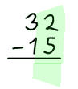

Subtraction by "Regrouping"
(Also called "borrowing" or "trading")
To subtract numbers with more than one digit:
- write down the larger number first and the smaller number directly below it
making sure to line up the columns!
- then do subtractions one column at a time like this (press play button):
Smaller Number - Bigger Number

But what if a column has a smaller number on the top?
How do we do 2 − 5 ?
The Solution: Make the "2" larger by "regrouping" (press arrow button):
images/moving-tens.js
In 32:
- the "3" means 3 tens,
- the "2" means 2 ones,
So we:
- reduce the 3 by 1
- increase the 2 by 10
And we get:
- 2 tens,
- 12 ones
And here is how to do it with a pencil and paper:
We use this method whenever a column has a smaller number on top, as in this example:
Zero
But we can't regroup from zero ...
But we can make a "0" into a "10" by regrouping it first, them carry on normally, like this:
Now, you can practice with these Subtraction Worksheets
1600, 1601, 3412, 3413, 1602, 1603, 3414, 3415, 2948